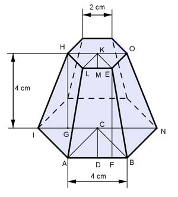

Aufgabe 254 Wie groß sind das Volumen V und die Oberfläche O des Pyramidenstumpfes mit regelmäßigen Sechsecken als Grund- und Deckfläche?

Satz von Pythagoras im Dreieck ADC: AC = 4 cm = AB AD = 4 cm/2 = 2 cm AC2 = AD2 + DC2 | - AD2 DC2 = AC2 - AD2 = 42 cm2 - 22 cm2 = 12 cm2 |√ DC = 3,46 cm AB * DC G1 = 6 * --------- = 2 4 cm * 3,46 cm = 6 * ---------------- = 41,5 cm2 2 Satz von Pythagoras im Dreieck LMK: LK = 2 cm = LE LM = 2 cm/2 = 1 cm LK2 = LM2 + MK2 |-LM2 MK2 = LK2 - LM2 = 22 cm2 - 12 cm2 = 3 cm2 |√ MK = 1,73 cm LE * MK G2= 6 * --------- = 2 2 cm * 1,73 cm = 6 * ---------------- = 10,4 cm2 2 Pyramidenstumpf: V = V = 4 V = --- * (41,5 + 20,8 + 10,4) cm3 3 V = 96,9 cm3 O = G1 + G2 + M Satz von Pythagoras im Dreieck IGH: IN = 2 * AB = 2 * 4 cm = 8 cm HO = 2 * NE = 2 * 2 cm = 4 cm IN - HO 8 cm - 4 cm IG = --------- = ------------- = 2 cm 2 2 IH2 = IG2 + GH2 = 22 cm2 + 42 cm2 = 20 cm2 |√ IH = 4,47 cm Satz von Pythagoras im Dreieck FBE: IH = BE AB - LE 4 cm - 2 cm FB = --------- = ------------- = 1 cm 2 2 BE2 = FB2 + FE2 |-FB2 FE2 = BE2 - FB2 = 4,472 cm2 - 12 cm2 = 19 cm2 |√ FE = 4,36 cm AB + LE O = 41,5 cm2 + 10,4 cm2 + 6 * --------- * FE 2 4cm + 2cm O = 41,5cm2 + 10,4cm2 + 6 * ----------- * 4,36 cm 2 O = 41,5 cm2 + 10,4 cm2 + 78,5 cm2 = 130,4 cm2